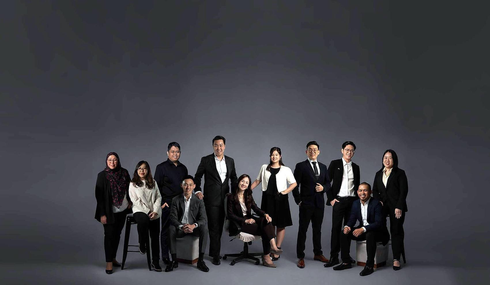

The people behind JWA.
From a small practice in Kota Kinabalu to a Grade G7 contractor building across Malaysia. This is the story of the people who made it happen.


The team behind every project.

How the team is organised
- Interior Design
- Project Designers
- Interior Designers
- Quantity Surveying
- Quantity Surveyors
- Architecture
- Project Architects
- Architectural Designers
- Human Resources
- Admin & Reception
- Construction
- ID Construction Supervisors
- Architectural Construction Supervisors
- Accounts & Purchasing
- Accounts
- Purchasing
- Logistics
- Marketing
- Business Development
Swipe sideways to see the whole team.
Two founders. One belief.
“Our goal has never been simply to design buildings. It has always been to build organisations, partnerships and projects that create lasting value for Sabah.”
LAM-registered Professional Architect with a Master of Architecture from New Zealand. Founding President of Sabah Young Business & Industry Leaders (SYBIL), and appointed to the DBKK Board of Advisors in 2024.
Co-founded JWA in 2010 and leads its operations, keeping every department working as one team.
To transform Sabah’s construction industry by being a model of excellence that delivers international standards through an integrated ecosystem of services, while empowering local talent.
Why we exist
Sabah deserves buildings of an international standard, built by Sabahans. Every project is a chance to show it can be done.
Our mission
To be an integrated construction company for commercial and GLC projects, with an in-house team of project managers, architects, interior designers, quantity surveyors, procurement and construction professionals, delivering with coordination, accountability and certainty.
Our values
- Proficiency and quality of design
- Diversity and teamwork
- Integrity and reliability
- Compliance and ethics
- Professional excellence
Proudly Sabahan.
We started here. We hire here. We build here. Our people come from across Sabah’s many communities, and they are why our vision is possible. That pride travels with us to every project in Malaysia.
We take on local graduates and train them across architecture, design and construction, then trust them with real projects.
Where the work happens.
Design studio. Material library. Project teams. Our own carpentry workshop. All together under one roof at YLY Plaza, Inanam.


Licensed to build for the nation.
Licences and memberships, not as badges, but as the permission to build for government, GLCs and corporations across Malaysia.
 CIDB Grade G7Highest contractor grade, with SCORE 3-Star rating and SPKK registration
CIDB Grade G7Highest contractor grade, with SCORE 3-Star rating and SPKK registration Ministry of FinanceRegistered for government contracts
Ministry of FinanceRegistered for government contracts ISO 9001:2015Quality management, certified by ACS
ISO 9001:2015Quality management, certified by ACS LAM registered architectLembaga Arkitek Malaysia
LAM registered architectLembaga Arkitek Malaysia PAM corporate memberPertubuhan Akitek Malaysia
PAM corporate memberPertubuhan Akitek Malaysia MIID corporate memberMalaysian Institute of Interior Designers
MIID corporate memberMalaysian Institute of Interior Designers


Recognised at home and abroad.


Featured in MIID Decade of Design 11–21, the PAM Sabah Chapter Directory, Property Hunter Magazine and ConstructionPlus Asia.
One vision, a family of companies.
Architecture. Development. Government works. Materials. Education. Clean energy. Our sister companies share one vision, and one way of working.
 JWA Design & BuildDesign, build, interiors and carpentry
JWA Design & BuildDesign, build, interiors and carpentry Synergy ArchitectsArchitecture
Synergy ArchitectsArchitecture Sereniti EstatesDevelopment
Sereniti EstatesDevelopment Prestasi BinaGovernment and infrastructure
Prestasi BinaGovernment and infrastructure MissRenoTrading and supply
MissRenoTrading and supply Cipta ImpactEducation and local talent
Cipta ImpactEducation and local talent Kinara EnergyEnergy and water treatment
Kinara EnergyEnergy and water treatment
Partner with us
Let us build your dream together.
Every project we are proud of began with a conversation. Whether you are a GLC, a government agency, a developer or a family with a plot of land, tell us what you imagine. A name and one way to reach you is enough to begin.